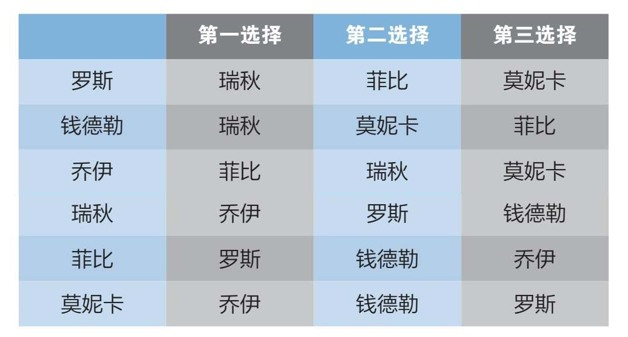

虽然本书重点意在帮你找到真挚、长久和浪漫的爱情，然而有时男女也会游走于更本能的层面。对于有些人而言，周五晚上的消遣若不结束在陌生人的卧室中便不完整。对另外一些人而言，舞厅里的暧昧接触便能满足他们的寻欢需求。不论你想得到什么，本章将向你展示如何在心仪对象面前，或者至少是在排遣寂寞时，最大程度增加自己的机会。
假设你和一群单身朋友都在派对中努力寻找意中人。你应该稳坐钓鱼台，还是径直冲向最好看的目标，尽管有被无情拒绝的风险？你应该接近什么样的人才更有胜算？
看过电影《美丽心灵》（A Beautiful Mind）的人可能觉得答案都在数学里了。这部电影讲述了数学巨子约翰·纳什的人生，对他在数学领域取得的主要突破性成就进行了戏剧化的表达。影片中很有名的一幕是，纳什和他那三个颇具魅力的绅士朋友在酒吧里看上了一行五位女士：四位深色头发女士，一位美丽出众的金发女士。
这四位男士的目光都被金发女士所吸引。然而与其都对金发女士献殷勤，纳什提出了不同的策略。他建议大家忽略金发女士，而把目标转向她的四个朋友：
“如果我们都对金发女士下手，那就是在自相残杀，结果是谁都无法得到她。接下来我们再去找她的朋友们，她们会不屑一顾，因为没有人愿意当备胎。然而假如我们都不找金发女士呢？我们不会互相影响，也不会冒犯其他几位女士。这是我们成功的唯一方式。”
让我先停下来说清楚其中的间接假设：
1. 金发女士会和任何接近她的男人搭讪——如果只有一个人接近她的话。
2. 金发女士在这场分配中没有话语权。
3. 几位男士宁可和他们觉得不那么有吸引力的女士在一起，也不愿“无功而返”。
撇开20世纪50年代男女平等的问题不谈，这例子的确说明了一个有违直觉的有趣观点：你最喜欢的并不一定是最佳选择。至少在上述情形中，忽视个人偏好对他们每个人来说都更有利。
这个问题背后的数学理论叫作博弈论，即在某一情形中构建最佳策略的方式。
博弈论并非只适用于娱乐活动，它在任何两个或两个以上对手为赢得某种报酬而竞争的情形中都适用。在这个例子中，几个朋友是为了赢得女士的芳心而竞争，而这个理论已被成功运用在各个领域中，包括进化生物学（拥有不同特征的同种动物为食物或其他资源竞争）、经济学和政治学（政府权衡各方利益，影响民众行为）。
在《美丽心灵》的例子中，让几位男士皆大欢喜的方式之一便是忽视金发女士。不过这虚构的纳什计划中有个漏洞：每位男士都可以轻而易举地让同伴相信他在遵守计划，却在最后一分钟改变目标去接近金发女士，从而变成大赢家。每个人依然能够抱得美人归，然而你若想维持友谊，这种做法总的来说是危险的。
即使纳什的最初假设是错误的，在背后捅朋友一刀也不明智。如果金发女士明显偏爱最英俊的男士，而对其他三位不感兴趣的话，那么具体行动策略就一目了然了。最英俊的男士应该去找金发女士，而其他三位男士该去找深色头发的女士。这样的话，这三位男士中任何一位若想在最后一分钟投奔金发女士都会被拒绝，还会影响他与其他几位女士发展的机会。
此时，几位男士的行为都对其个人有利（这种情况被称作“纳什均衡”），对集体也最有利（“帕累托均衡”）。
可惜，现实生活中很难遇到如此完美的情形——四个没有想法的克隆深色头发女士和一个金发万人迷。现实生活中，一行人中各有各的偏好，很难说服人们为顾全大局放弃自己的偏好。
那么让我们暂且把博弈论放在一边。不过，这并不意味着数学就不能帮助你约会。为了得到更实用的观点，让我们来看一个精妙的理论，它会告诉你约会时的行为尺度。
假设一个派对中有三个男孩在和三个女孩聊天。让我们为这六位单身人士随意挑选几个名字吧：乔伊、钱德勒、罗斯、菲比、莫妮卡和瑞秋。假设他们对三位异性的偏好排序。
尽管这个情形中的人物和事件都是虚构的，与受版权高度保护的电视剧没有任何关系，我依然决定——随意地决定——把罗斯和莫妮卡设定为兄妹。我还决定让他俩更愿意一同离开派对（理想情形），而不是独自离开，所以他俩各自是对方的第三选择。
瑞秋是最受欢迎的女孩，在罗斯和钱德勒的列表上均排第一位。同时，瑞秋和莫妮卡都把乔伊排在首位。大家的偏好之间存在冲突，而这意味着如果每个人都必须配对成功的话，有的人就要妥协。

如果我们让这个情形按传统的男孩追女孩模式发展，那么每个男孩都会接近各自的首选女孩。
罗斯和钱德勒都会接近瑞秋，她则要做出选择。罗斯在她的列表中排位更靠前，所以瑞秋和罗斯配对成功——至少暂时如此，因为瑞秋内心希望乔伊能够更多地注意到她。
钱德勒现在依然单身，于是他去找他的第二选择莫妮卡。莫妮卡没有其他人选，因此接受了钱德勒，但也同样暗暗希望乔伊会注意到她。
菲比没有被罗斯和钱德勒相中，于是和乔伊在一起了。
搞定了。男孩们都找到了各自的女孩，配对情况如下：
1. 罗斯——瑞秋
2. 钱德勒——莫妮卡
3. 乔伊——菲比
现在的情况是：每个男孩都无法优化选择了。只有钱德勒没有得到首选女孩瑞秋，而瑞秋已然拒绝了他。即便现在女孩们决定去找最心仪的男孩，男孩们也没有动力更换对象了。瑞秋或许更喜欢乔伊，但乔伊已经和他的首选菲比在一起了，不会愿意调换。
这情形对女孩们来说并不称心。瑞秋和莫妮卡都和自己的第二选择在一起，而菲比和自己的第三选择在一起。这在一共只有三个人选的情形中显得不那么理想，尤其和男孩们相比——他们都得到了第一或第二选择。
这种情形被称作“稳定婚姻问题”，而这几个人选择对象的方式叫作“盖尔——沙普利算法”。如果我们深究其中的数学原理，便会发现不寻常的结果。不论一共有多少个男孩和女孩，只要男孩是主动追求方，如下的四种结果永远不变：
1. 每个人都能成功配对。
2. 一旦配对结果确定，男女便都无法通过更换人选来增加满意度（ 例如，尽管菲比依然觉得罗斯不错，但罗斯和瑞秋在一起很开心）。
3. 一旦配对结果确定，每个男孩都得到了可选范围内最好的选择。
4. 一旦配对结果确定，每个女孩都得到了追求者中第一或第二选择。
最后两点说明了一个惊人的结果：简而言之，冒着被拒绝的风险主动追求对方的人，比坐等被追求的人会得到更好的结果。
让我们重新设定那个简单的例子，对调男女身份，再来看看这理论是否适用。让女孩主动追男孩，其他程序不变，会得出如下配对结果：
1. 瑞秋——乔伊
2. 菲比——罗斯
3. 莫妮卡——钱德勒
现在女孩们得到了她们的第一或第二选择，这是一个明显的进步。这次，男孩们都得到了他们的第二选择，不如主动出击时的结果理想。
这个结果听上去比较合理。如果你按列表选项排序逐一主动接近目标，你一定会得到最佳人选。如果你坐等他人接近，则不会和最差的人选在一起。不论你想获得何种关系，主动出击都会令你收获颇丰。
在“稳定婚姻问题”被应用在其他场景中时，主动和被动带来的差别尤为重要：美国政府就曾为此付出惨痛的代价。
从20世纪50年代起，美国政府在“全美住院医师配对项目”中运用盖尔——沙普利算法为医院调配医生。一开始，医院是主动方。这使医院获得了他们心仪的实习生，然而对于需要跨越大半个美国接受“并非最糟糕”雇主的医生来说并不理想。这意味着系统中充斥着怨声载道的医生，医院也颇为不满。项目组织者找到原因后，使医生变成了主动方。
盖尔——沙普利算法不仅适用于医院和周五夜晚的寻欢作乐，它还被应用在一系列真实场景中，例如牙科住院医生实习、加拿大律师就职、分配初升高学生以及姐妹会成员招募。这一算法如此实用，以至于海量学术文献记载了它的一系列拓展应用与特殊案例，其中很多依然适用于一开始就讲到的配偶问题。
数学家对算法做了修改，允许男女同时主动选择，并且在列表中增加了并列选项，允许宁可只身离席也不和角落中的怪人配对。学者们甚至还研究了男方出轨的情形（很奇怪，他们没有研究女方出轨的情形）。
这些特殊例子中的数学运算有时会演变得格外复杂（如果你感兴趣想深入研究的话，此书末尾附有很多不错的推荐书籍）。然而所有拓展应用和范例都说明了不变的一点：假如你能承受偶尔被拒绝的打击，你的主动终将得到回报。主动追求总是要好于被动等待。所以你要设置高一点的目标，并常常设置目标，数学是这样告诉你的。